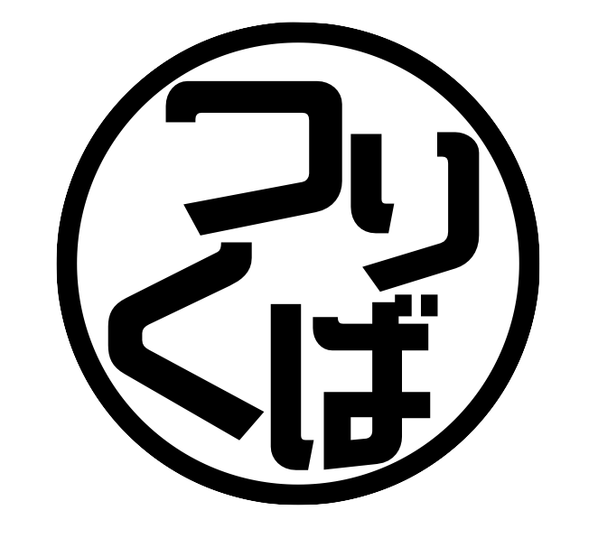

会社概要
- 会社名 ：株式会社つくりば
- 設立 ：2017年12月25日
- 本店所在地 ：〒107-0062 東京都港区南青山1丁目14番7号ベルメイゾン1F
- 資本金 ：10万円
- 業務内容 ：テレビ番組、WEB動画の制作
- 取引銀行 ：三井住友銀行 青山支店（258）
取引実績
- 株式会社 テレビ東京
- 株式会社 テレビ東京制作（PROTX）
- 株式会社テレビ東京ミュージック
- 株式会社テレビ東京コミュニケーションズ
- テレビ朝日映像株式会社 ViViA (ヴィヴィア）
- ヤフー株式会社
- 株式会社BitStar
- クローク株式会社
- 株式会社Candee
- 株式会社チョコレイト
- ウォルト・ディズニー・ジャパン株式会社
制作実績（一部抜粋）
2018年
- 1月12日OA AbemaTV ウルトラゲームス「モンスト1000万個オーブ山分け！ 土田ヒカキン軍団VSダチョウ倶楽部！」
- 1月27日OA AbemaTV ウルトラゲームス「EVO Japan 2018」
- 2月24日OA AbemaTV ウルトラゲームス「パズドラ6周年記念特番」
- 3月8日OA AbemaTV ウルトラゲームス「シャドウバース重大発表特番 世界王者に勝ったら100万円」
- 3月12日OA テレビ東京「青春高校3年C組」WEB PR動画
- 3月27日OA WEB生配信「GUMI ドールズオーダー特番」（キャスティング）
- 4月10日OA WEB生配信「X-LEGEND 暁のエピカ特番」
- 4月11日OA WEB生配信「P&G ヘアレシピ特番」